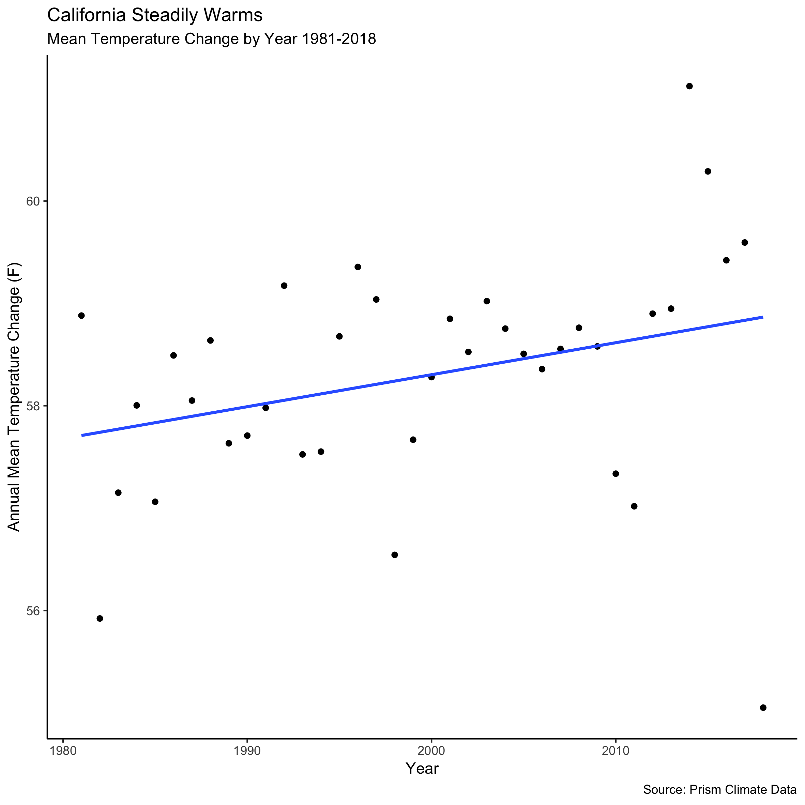
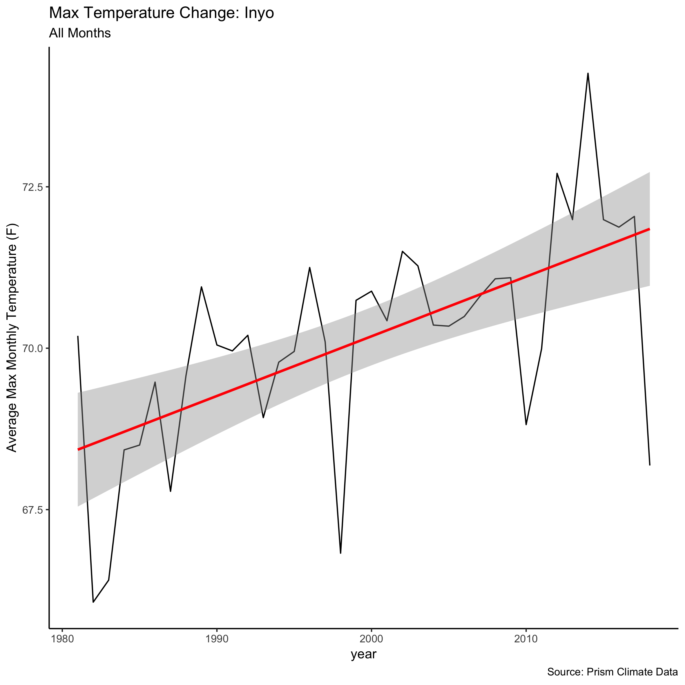
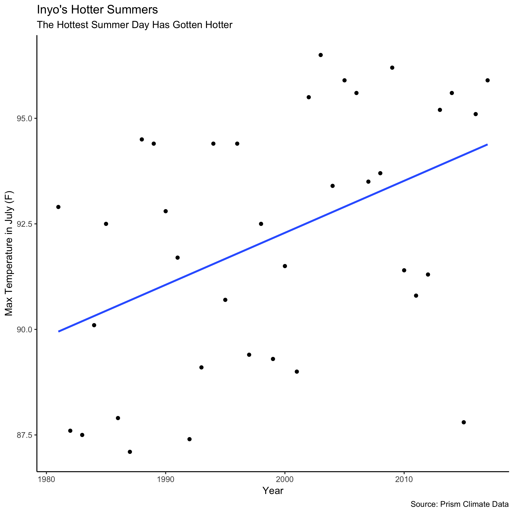
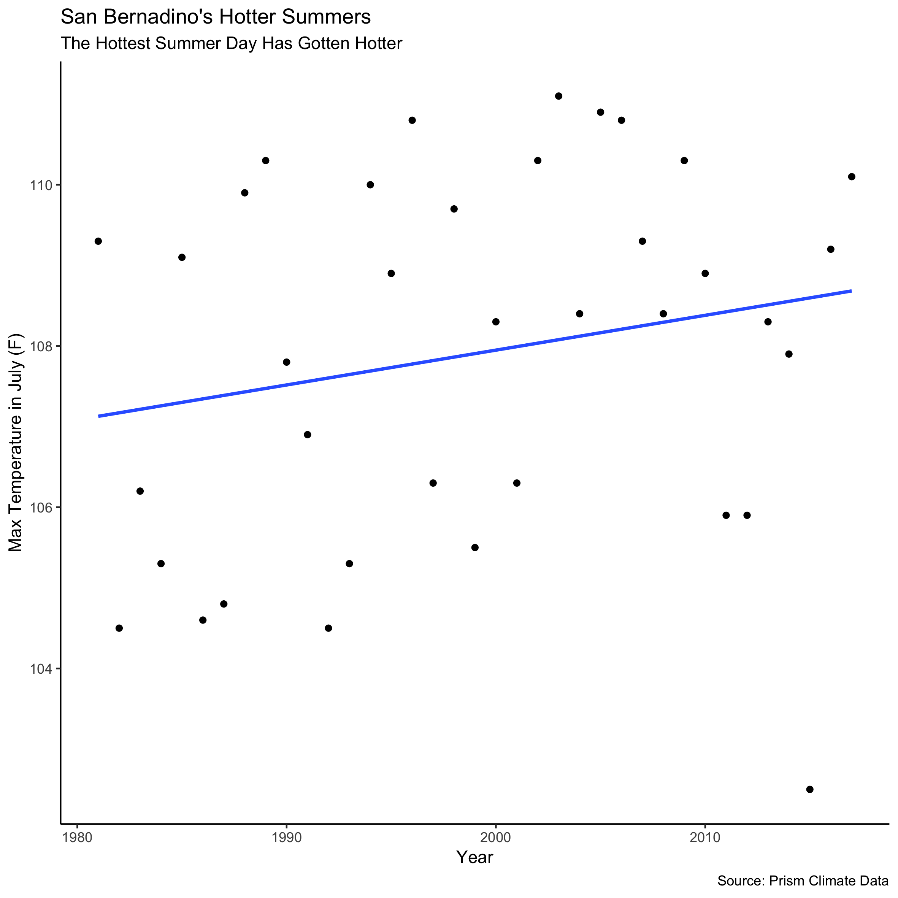

California is getting warmer overall. While we only have a snapshot of data, we can still easily observe the gradual change. Normalizing this by county, we observe a mean change of 1.16 degrees F for the time period. This effect is statistically significant at the 10% level.
However, this overall trend hides substantial heterogeneity as some counties and some months have seen larger changes than others.
This interactive map shows how some counties, like Inyo have seen over 4 degree average temperature changes in this time period, other counties like Sonoma have seen a small decrease in average temperature.
This visual shows even more clearly how different counties have experience different levels of temperature changes. Climate change research indicates that extreme temperatures (very hot days) will become more common as well as the mean temperature increasing. This graphic shows that the hottest day per month for different counties also got hotter on average across the time period, but this shift was not in perfect lockstep with the shift in the mean temperature. Other visuals can help us make sense of this finding.
While California got drier during the time period, this trend is less noticable than the change in heat (though almost universal across counties). However, one can see that places like Los Angeles county, which receives very little rainfall (get yearly average for the county)
Climate change does not inherently led to drier climates, but hotter temperatures means more evaporation and that the air can store more water vapor before it must release the water in precipitation events. These means that storms are often more intense when they happen. In addition, the change to the climate has interacted with other climate phenomena in a way that has exacerbated drought in some prone areas. For example, California has suffered recent droughts that have been linked to climate change (cite).
The extreme heat map perhaps best exposed the substantial heterogeneity across California. Inland and southern counties experienced much hotter maximum monthly temperatures, while some counties around the bay area actually saw their hottest temperatures decrease. Following the Mark Twain quote “The coldest winter I ever spent was a summer in San Francisco”, one reason for this surprising trend could be due to fog. The Bay Area receives a lot of fog during high temperatures which is a natural safeguard against high temperatures. Purely speculatively, one could imagine that with a warmer ocean and more extreme heat, that this area is seeing the cooling mechanism of fog get set off more often on would be max heat days.
However, San Francisco, where we have seen slight cooling of max temperatures, has still warmed a little on average and is not one of the counties that ever had max temperatures in the summer that put its citizens at risk. To understand the impact of the change to max temperature it is worth exploring a case study.
However, San Francisco, where we have seen slight cooling of max temperatures, has still warmed a little on average and is not one of the counties that ever had max temperatures in the summer that put its citizens at risk. To understand the impact of the change to max temperature it is worth exploring a case study.
In July, for instance, the max temperature which hovered around 90 degrees now regularly sits closer to 95 degrees. Already, 95 degree temperatures could pose problems for less healthy individuals, but a medium size change could have even more severe an effect in a place like San Bernadino
With July temperatures that could already get into the mid-100s, an increase of a few degrees has meant that San Bernadino now faces max temperatures in the 110s - a daunting climate for those who have health problems and may not have access to air conditioning